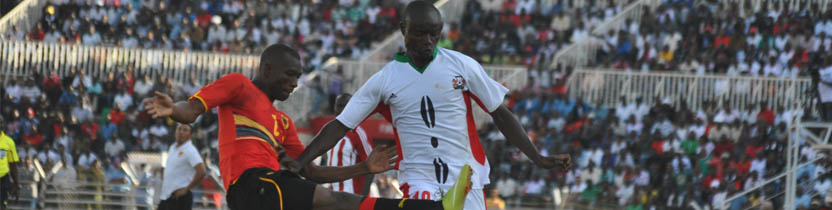

The Kenya Footballers’ Welfare Association (KEFWA) was formed on September 2011. The aims of the KEFWA are to protect, improve and negotiate the conditions, rights and status of all professional players by collective bargaining agreements.
KEFWA is a key figure in all aspects of the professional game which affects its members and has added to its reputation on the principle of caring for the interests of the game as a whole, in addition to the interests of its members. The experience and expertise KEFWA has gained since its formation ensures it is able to provide the best advice, representation and assistance in all aspects of a player’s career and beyond.
The key to its longevity – the players. Since its establishment KEFWA has, and always will be run by the players for the players. The players that drove its beginnings had the ambition and desire to form a players’ association in Kenya that reflected the dignity, professionalism and quality associated with earning a living from playing the world’s greatest and most important game.
In pursuing their goal the players have long understood that the well-being of the game is a precondition to the well being of the players. By doing so, KEFWA has been at the forefront in reforming a sport that was once widely regarded as a ‘joke’ to one that is now firmly established on the world stage both internationally
The challenges that now confront KEFWA and players are as challenging and as exciting as they were in 2011. KEFWA will continue to confront them and work tirelessly in pursuing the interests of the game and the players.